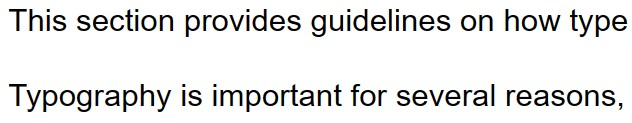

Typography
This section provides guidelines on how type should be styled for all digital products.
Typography is important for several reasons, including, but not limited to:
- Establishing visual hierarchy
- Ensures content discovery and readability
- Branding
Typefaces
A typeface is a family of fonts, but a font is a particular style within that family.
Two typefaces will be used for Caribbean Chef: Courgio and Helveltica-sans-serif.
See the table below for details of use.
| Font | Use | Sample |
|---|---|---|
| Courgette | To display page title in header | Like many great food ... |
| Helveltica | To identify sections of content, the section names are enclosed within the H2 tags | Like many great food traditions, doubles are part cultural tradition and part legend. |
| Helveltica | To identify sub-sections of content, the section names are enclosed within the H3 tags | Like many great food traditions, doubles are part cultural tradition and part legend. |
| Helveltica | To display page content placed within the body tag | Like many great food traditions, doubles are part cultural tradition and part legend. |
- Maximum of three (3) font per page
- H1 as page heading: Courgette
- H3 as sub-headings: Lato
- Body: Helvitica
Sample Code
Sample Image
Typefaces
A typeface is a family of fonts, but a font is a particular style within that family.
Two typefaces will be used for Caribbean Chef: Courgio and Helveltica-sans-serif.
See the table below for details of use.
| Font | Use | Sample |
|---|---|---|
| Courgette | To display page title in header | Like many great food ... |
| Helveltica | To identify sections of content, the section names are enclosed within the H2 tags | Like many great food traditions, doubles are part cultural tradition and part legend. |
| Helveltica | To identify sub-sections of content, the section names are enclosed within the H3 tags | Like many great food traditions, doubles are part cultural tradition and part legend. |
| Helveltica | To display page content placed within the body tag | Like many great food traditions, doubles are part cultural tradition and part legend. |
- Maximum of three (3) font per page
- H1 as page heading: Courgette
- H3 as sub-headings: Lato
- Body: Helvitica